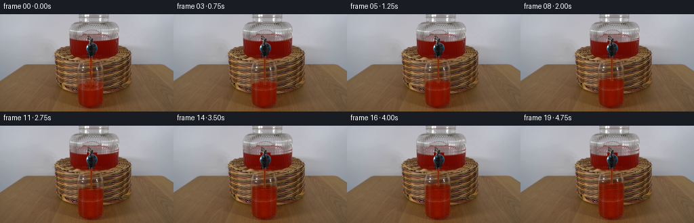
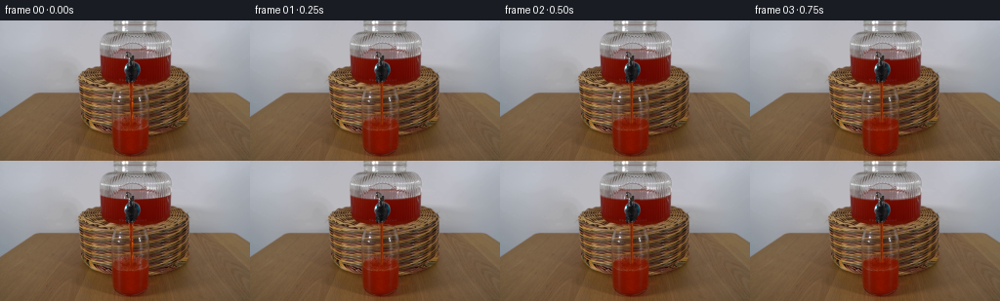
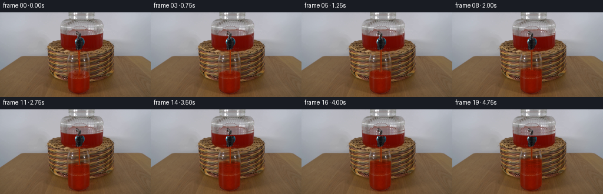
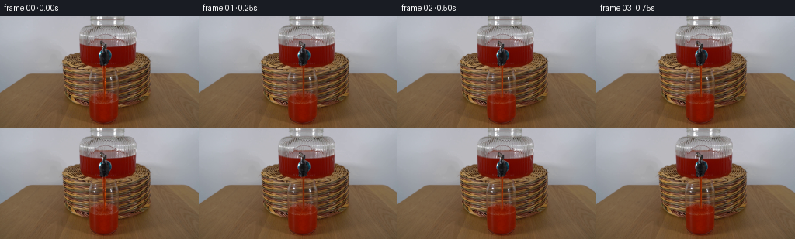

CODING AGENTS AS PIXEL WORLD MODELS
traex/GPT-6.1-Sol · 0065
点击播放 · 原生 RGB 像素
逐轮保存的候选
回放视频、检查图与代码变化。
每份候选均可单独播放。实际图片检查记录在下方工具轨迹中。
候选 01播放与检查图
点击播放 · 原生 RGB 像素


展开代码变化
--- 上一保存版本
+++ 本次保存版本
@@ -0,0 +1,136 @@
+from pathlib import Path
+import numpy as np
+from PIL import Image
+from scipy.ndimage import map_coordinates, gaussian_filter, gaussian_filter1d
+import artifact_io
+
+CASE = Path(__file__).resolve().parent
+S = 4
+W, H = 256, 144
+
+def smooth(x):
+ x=np.clip(x,0.,1.)
+ return x*x*(3.-2.*x)
+
+def main():
+ initial=np.array(Image.open(CASE/'first_frame.png').convert('RGB'),dtype=np.uint8)
+ # The entire fixed photographic setup is retained. Only the two free liquid
+ # surfaces and the falling fluid change.
+ source=np.asarray(Image.fromarray(initial).resize((W*S,H*S),Image.Resampling.BICUBIC),dtype=np.float64)
+ yy,xx=np.mgrid[0:H*S,0:W*S].astype(float)
+ x=(xx+.5)/S-.5
+ y=(yy+.5)/S-.5
+ orig=initial.astype(float)
+ cols=orig[117:128,110:157,:].mean(axis=0)
+ cols=gaussian_filter1d(cols,.65,axis=0)
+ bulk=np.stack([np.interp(x,np.arange(110,157),cols[:,c]) for c in range(3)],axis=-1)
+
+ # Very slightly tapered straight sides, with the existing glass wall
+ # highlights left in the optical transfer rather than repainted.
+ cx=133.65
+ rx=18.25
+ u=(x-cx)/rx
+ chord=np.sqrt(np.maximum(0.,1-u*u))
+ ellipse_h=7.0*chord
+ side=smooth((x-115.25)/.60)*smooth((152.12-x)/.60)
+ old_level=106.9
+ def depth(level,wave=0):
+ back=level-ellipse_h+wave
+ front=level+ellipse_h+wave
+ return smooth((y-back)/np.maximum(front-back,.75))
+ d0=depth(old_level)
+ # Plate / wetting profile: no additional liquid affects the foot of the cup.
+ glass=side*smooth((y-78.4)/.7)*smooth((134.5-y)/1.1)
+ jet_xmask=smooth((x-131.45)/.65)*smooth((136.9-x)/.75)
+ jet_ymask=smooth((y-63.1)/1.3)*smooth((108.4-y)/2.5)
+ oldjet=jet_xmask*jet_ymask
+ # Transparent background under the original falling stream, interpolated
+ # locally; it is only exposed within a 5-pixel-wide stream corridor.
+ left=np.stack([map_coordinates(source[:,:,c],[yy,np.full_like(xx,130.15*S)],order=1,mode='nearest') for c in range(3)],axis=-1)
+ right=np.stack([map_coordinates(source[:,:,c],[yy,np.full_like(xx,138.1*S)],order=1,mode='nearest') for c in range(3)],axis=-1)
+ frac=np.clip((x-130.15)/(138.1-130.15),0,1)[...,None]
+ bgjet=left*(1-frac)+right*frac
+ bg=source*(1-oldjet[...,None])+bgjet*oldjet[...,None]
+ # The fluid already in the cup establishes all the red, transmitted light,
+ # and vertical glass-reflection tones used for the continuation.
+ attenuation=np.array([.95,3.55,4.9])
+ frames=[initial.copy()]
+ for k in range(1,20):
+ t=k/4.
+ p=t/4.75
+ rise=21.4*(1.065*p-.065*p*p)
+ level=old_level-rise
+ phase=t*9.4
+ distance=np.abs(x-134.1)
+ wave=(.26*np.sin(distance*1.04-phase)*np.exp(-distance/14.0)
+ +.17*np.sin(t*6.1+(x-cx)*.28)
+ +.40*np.exp(-((x-134.1)/2.8)**2))
+ d1=depth(level,wave)
+ inc=np.maximum(0,d1-d0)
+ extinction=np.exp(-inc[...,None]*attenuation)
+ fluid=bulk+(source-bulk)*extinction
+ # Correct only the submerged jet: it becomes one continuous pool,
+ # rather than leaving a fixed red line inside the newly filled portion.
+ fluid_bg=bulk+(bg-bulk)*extinction
+ old_submerge=smooth((y-level-.6)/1.0)*oldjet
+ fluid=fluid*(1-old_submerge[...,None])+fluid_bg*old_submerge[...,None]
+ a=glass*smooth(inc*12)
+ out=source*(1-a[...,None])+fluid*a[...,None]
+
+ # The reservoir's area is roughly four times that of the drinking
+ # glass, so its shallow fall conserves the delivered liquid volume.
+ fall=rise*.246
+ surface=39.5-3.3*((x-140.0)/38.0)**2
+ jar_side=smooth((x-102.6)/.75)*smooth((177.7-x)/.8)
+ band=smooth((y-surface+1.4)/1.0)*smooth((surface+fall+2.0-y)/1.1)
+ faucet_protect=1-smooth((x-127.2)/.8)*smooth((143.1-x)/.8)
+ jar_alpha=jar_side*band*faucet_protect
+ ysample=yy-fall*S
+ moved=np.stack([map_coordinates(source[:,:,c],[ysample,xx],order=1,mode='nearest') for c in range(3)],axis=-1)
+ out=out*(1-jar_alpha[...,None])+moved*jar_alpha[...,None]
+
+ # Clear the now-shorter free jet before drawing the flowing column.
+ free=oldjet*smooth((level+.7-y)/1.5)
+ out=out*(1-free[...,None])+bgjet*free[...,None]
+ length=np.clip((y-63.0)/35.,0,1)
+ jetcenter=134.35+.13*np.sin(y*.63-phase)*length+.06*np.sin(t*6.8)
+ half=1.62-.20*length+.05*np.sin(y*.95-phase*1.55)
+ q=(x-jetcenter)/half
+ jetalpha=smooth((half-np.abs(x-jetcenter))/.5)*smooth((y-62.6)/1.6)*smooth((level+.6-y)/1.05)
+ stripe=np.exp(-((q-.53)/.22)**2)
+ refract=np.exp(-((q+.62)/.27)**2)
+ traveling=np.sin(y*1.29-t*29)*np.sin(y*.49-t*15)
+ jetcolor=np.empty_like(source)
+ jetcolor[:,:,0]=122+36*stripe+6*refract+6*traveling
+ jetcolor[:,:,1]=33+25*stripe+23*refract+2.7*traveling
+ jetcolor[:,:,2]=2.5+10*stripe+19*refract+1.3*traveling
+ out=out*(1-jetalpha[...,None])+jetcolor*jetalpha[...,None]
+
+ # Low-energy impact dimples and translucent spreading surface ripples.
+ # These are contained entirely inside the clear drinking glass.
+ ell=(x-cx)**2/(rx*rx)+(y-level-wave)**2/np.maximum(ellipse_h*ellipse_h,1.)
+ surf_mask=smooth((1.03-ell)*5)*side
+ radial=np.sqrt((x-134.2)**2+((y-level)*2.8)**2)
+ ripple=.8*np.sin(radial*1.05-phase)*np.exp(-radial/12.)
+ crest=np.exp(-((y-(level+ellipse_h+wave-.4))/.6)**2)*side
+ out += (surf_mask*ripple)[...,None]*np.array([3.,1.8,.7])
+ out += (crest*.65)[...,None]*np.array([5.,2.8,1.0])
+ impact=np.exp(-((x-134.4)/2.0)**2-((y-level-.3)/.75)**2)
+ out += impact[...,None]*np.array([11.,5.,1.5])
+ # A few subpixel pinprick bubbles persist and advect around the impact.
+ for b in range(5):
+ age=(t*.94+b*.217)%1.
+ bx=134.1+(-1 if b%2 else 1)*(1.+6*age)+.3*np.sin(b*4+t)
+ by=level+1.8+age*3.1+1.0*np.sin(b*2.1+t)
+ bubble=np.exp(-((x-bx)/(.17+.08*age))**2-((y-by)/.19)**2)*(1-age)
+ out+=bubble[...,None]*np.array([12.,7.,3.])
+
+ # Downsample only the difference. This keeps every unmoving background
+ # pixel identical to the input photograph, without resampling the shot.
+ delta=(out-source).reshape(H,S,W,S,3).mean(axis=(1,3))
+ frame=np.clip(np.rint(orig+delta),0,255).astype(np.uint8)
+ frames.append(frame)
+ artifact_io.save(np.stack(frames),CASE)
+
+if __name__=='__main__':
+ main()
候选 02播放与检查图
点击播放 · 原生 RGB 像素


展开代码变化
--- 上一保存版本
+++ 本次保存版本
@@ -51,6 +51,18 @@
frac=np.clip((x-130.15)/(138.1-130.15),0,1)[...,None]
bgjet=left*(1-frac)+right*frac
bg=source*(1-oldjet[...,None])+bgjet*oldjet[...,None]
+ # Remove only the raised tap lever from the source of the meniscus
+ # translation; the actual metal tap is restored at its fixed coordinates.
+ lever_left=np.stack([map_coordinates(source[:,:,c],[yy,np.full_like(xx,126*S)],order=1,mode='nearest') for c in range(3)],axis=-1)
+ lever_right=np.stack([map_coordinates(source[:,:,c],[yy,np.full_like(xx,145*S)],order=1,mode='nearest') for c in range(3)],axis=-1)
+ lever_fraction=np.clip((x-126)/19,0,1)[...,None]
+ lever_clean=lever_left*(1-lever_fraction)+lever_right*lever_fraction
+ lever_area=smooth((x-127.0)/.8)*smooth((143.6-x)/.8)*smooth((y-30.7)/.7)*smooth((43.5-y)/1.)
+ jar_clean=source*(1-lever_area[...,None])+lever_clean*lever_area[...,None]
+ chroma=source[:,:,0]/np.maximum(1.,source[:,:,1])
+ metal=smooth((1.38-chroma)/.25)
+ darkmetal=smooth((86-source[:,:,0])/18.)
+ faucet_keep=lever_area*np.maximum(metal,darkmetal)
# The fluid already in the cup establishes all the red, transmitted light,
# and vertical glass-reflection tones used for the continuation.
attenuation=np.array([.95,3.55,4.9])
@@ -83,10 +95,10 @@
surface=39.5-3.3*((x-140.0)/38.0)**2
jar_side=smooth((x-102.6)/.75)*smooth((177.7-x)/.8)
band=smooth((y-surface+1.4)/1.0)*smooth((surface+fall+2.0-y)/1.1)
- faucet_protect=1-smooth((x-127.2)/.8)*smooth((143.1-x)/.8)
+ faucet_protect=1-faucet_keep
jar_alpha=jar_side*band*faucet_protect
ysample=yy-fall*S
- moved=np.stack([map_coordinates(source[:,:,c],[ysample,xx],order=1,mode='nearest') for c in range(3)],axis=-1)
+ moved=np.stack([map_coordinates(jar_clean[:,:,c],[ysample,xx],order=1,mode='nearest') for c in range(3)],axis=-1)
out=out*(1-jar_alpha[...,None])+moved*jar_alpha[...,None]
# Clear the now-shorter free jet before drawing the flowing column.
可观测工具轨迹
实际执行的命令与返回图片。
命令 1exit 0
/bin/bash -lc 'ls -la && cat prompt.txt && cat GENERATION_RULES.md'
命令 2exit 0
/bin/bash -lc "cat artifact_io.py && python - <<'PY'
from PIL import Image
import numpy as np
im=np.array(Image.open('first_frame.png').convert('RGB'))
print('Shape',im.shape)
print('Range',im.min((0,1)),im.max((0,1)))
# coarse category map
for y in range(0,144,3):
s=''
for x in range(0,256,3):
r,g,b=im[y:y+3,x:x+3].mean((0,1))
if r>g*1.4 and r>b*1.4 and r>80:c='R'
elif r>g*1.25 and r>b*1.2:c='r'
elif max(r,g,b)<35:c='@'
elif max(r,g,b)<65:c='#'
elif max(r,g,b)<105:c='o'
elif r>b*1.5 and g>b*1.1:c='w'
elif max(r,g,b)<145:c=':'
elif max(r,g,b)<190:c='.'
else:c=' '
s+=c
print(s)
PY"命令 3exit 0
/bin/bash -lc "python - <<'PY'
from PIL import Image
import numpy as np
im=np.array(Image.open('first_frame.png'))
# RGB categorize the center of the image; coordinates mapped 1:1
for y in range(25,144):
s=''
for x in range(75,196):
r,g,b=map(float,im[y,x]);v=(r+g+b)/3
if r>g*1.7 and r>b*1.7 and r>110:c='R' if r>170 else 'r'
elif r>g*1.35 and r>b*1.3:c='t'
elif max(r,g,b)<35:c='@'
elif max(r,g,b)<60:c='#'
elif max(r,g,b)<100:c='O'
elif max(r,g,b)<135:c='o'
elif max(r,g,b)<170:c=':'
elif max(r,g,b)<210:c='.'
else:c=' '
s+=c
print(f'{y:3d} {s}')
PY"命令 4exit 0
/bin/bash -lc "python - <<'PY'
from PIL import Image
import numpy as np
im=np.array(Image.open('first_frame.png'))
chars='@%#*+=-:. '
a=im.mean(2)
for y in range(0,144,2):
print(f'{y:3} '+''.join(chars[min(9,int(v//26))] for v in a[y:y+2,65:206].mean(0)))
print('COLORS central cup and stream:')
for y in [62,65,70,75,80,85,90,94,96,98,100,102,104,108,112,116,120,124,128,132,136,140]:
print(y, ' '.join(f'{x}:{tuple(im[y,x])}' for x in [104,108,112,116,120,124,128,130,132,134,136,140,144,148,152,156,160]))
PY"命令 5exit 0
/bin/bash -lc "python - <<'PY'
from PIL import Image
import numpy as np
im=np.array(Image.open('first_frame.png')).astype(float)
print('x',''.join(str(x//10%10) for x in range(98,162)))
print(' ',' '.join([])+''.join(str(x%10) for x in range(98,162)))
for y in range(59,140):
s=''
for x in range(98,162):
r,g,b=im[y,x];v=(r+g+b)/3
if r>g*2.5 and r>b*2.5:c='R' if r>110 else 'r'
elif r>g*1.9 and r>b*2:c='~'
elif r>g*1.4 and r>b*1.6:c='w'
elif r>g*1.25 and r>b*1.3:c='o'
elif max(r,g,b)-min(r,g,b)<25:c='H' if v>180 else '+' if v>125 else '=' if v>80 else '#' if v>35 else '@'
else:c='.'
s+=c
print(f'{y:3} {s}')
print('neutral bright pixels:')
for y in range(60,136):
rg=im[y,:,0]-im[y,:,1];rb=im[y,:,0]-im[y,:,2]
xs=np.where((rg<40)&(rb<65)&(im[y,:,0]>145)&(np.arange(256)>103)&(np.arange(256)<158))[0]
if xs.size:print(y,[(int(x),im[y,x].astype(int).tolist()) for x in xs])
PY"命令 6exit 0
/bin/bash -lc "python - <<'PY'
from PIL import Image
import numpy as np
im=np.array(Image.open('first_frame.png')).astype(int)
# glass surface and dispenser outlines green-channel dense values, 10-unit grey levels, character 0 bright low-> high
for y in range(58,116):
print('%3d '%y+''.join('0123456789ABCDEFGHIJKLMNOPQRSTUVWXYZ'[min(35,im[y,x,1]//8)] for x in range(106,159)))
print('\\ncol colors reservoir')
for y in range(26,49):
print(y,' '.join(f'{x}:{im[y,x].tolist()}' for x in [105,110,115,120,125,130,140,145,150,155,160,170,180]))
PY"命令 7exit 0
/bin/bash -lc "python - <<'PY'
import numpy as np
from PIL import Image
A=np.array(Image.open('first_frame.png')).astype(float)
for x in range(129,140):
print(x,A[67:97,x].mean(0).round(1))
for x in range(112,154):
print('cup',x,A[115:128,x].mean(0).round(1))
PY"命令 8exit 0
/bin/bash -lc "python - <<'PY' import scipy print(scipy.__version__) PY"
命令 9exit 0
/bin/bash -lc "python - <<'PY'
import numpy as np
from PIL import Image
im=np.array(Image.open('first_frame.png')).astype(float)
for x in range(114,154,2):
rs=im[88:127,x,0]/np.maximum(1,im[88:127,x,1]); bs=im[88:127,x,2]
print(x,[(y+88,round(rs[y],1),int(bs[y])) for y in range(len(rs)) if rs[y]>2.2][:8])
PY"命令 10exit 0
/bin/bash -lc "cat > .tmp/profile.py <<'PY'
from PIL import Image
import numpy as np
im=np.array(Image.open('first_frame.png')).astype(float)
for y in range(74,101):
print(y,' '.join(f'{x}={im[y,x].astype(int).tolist()}' for x in [113,114,115,116,117,118,119,120,121,122,123,124,140,141,142,143,144,145,146,147,148,149,150,151,152,153,154]))
PY
python .tmp/profile.py"命令 11exit 0
/bin/bash -lc "cat > generate.py <<'PY'
from pathlib import Path
import numpy as np
from PIL import Image
from scipy.ndimage import map_coordinates, gaussian_filter, gaussian_filter1d
import artifact_io
CASE = Path(__file__).resolve().parent
S = 4
W, H = 256, 144
def smooth(x):
x=np.clip(x,0.,1.)
return x*x*(3.-2.*x)
def main():
initial=np.array(Image.open(CASE/'first_frame.png').convert('RGB'),dtype=np.uint8)
# The entire fixed photographic setup is retained. Only the two free liquid
# surfaces and the falling fluid change.
source=np.asarray(Image.fromarray(initial).resize((W*S,H*S),Image.Resampling.BICUBIC),dtype=np.float64)
yy,xx=np.mgrid[0:H*S,0:W*S].astype(float)
x=(xx+.5)/S-.5
y=(yy+.5)/S-.5
orig=initial.astype(float)
cols=orig[117:128,110:157,:].mean(axis=0)
cols=gaussian_filter1d(cols,.65,axis=0)
bulk=np.stack([np.interp(x,np.arange(110,157),cols[:,c]) for c in range(3)],axis=-1)
# Very slightly tapered straight sides, with the existing glass wall
# highlights left in the optical transfer rather than repainted.
cx=133.65
rx=18.25
u=(x-cx)/rx
chord=np.sqrt(np.maximum(0.,1-u*u))
ellipse_h=7.0*chord
side=smooth((x-115.25)/.60)*smooth((152.12-x)/.60)
old_level=106.9
def depth(level,wave=0):
back=level-ellipse_h+wave
front=level+ellipse_h+wave
return smooth((y-back)/np.maximum(front-back,.75))
d0=depth(old_level)
# Plate / wetting profile: no additional liquid affects the foot of the cup.
glass=side*smooth((y-78.4)/.7)*smooth((134.5-y)/1.1)
jet_xmask=smooth((x-131.45)/.65)*smooth((136.9-x)/.75)
jet_ymask=smooth((y-63.1)/1.3)*smooth((108.4-y)/2.5)
oldjet=jet_xmask*jet_ymask
# Transparent background under the original falling stream, interpolated
# locally; it is only exposed within a 5-pixel-wide stream corridor.
left=np.stack([map_coordinates(source[:,:,c],[yy,np.full_like(xx,130.15*S)],order=1,mode='nearest') for c in range(3)],axis=-1)
right=np.stack([map_coordinates(source[:,:,c],[yy,np.full_like(xx,138.1*S)],order=1,mode='nearest') for c in range(3)],axis=-1)
frac=np.clip((x-130.15)/(138.1-130.15),0,1)[...,None]
bgjet=left*(1-frac)+right*frac
bg=source*(1-oldjet[...,None])+bgjet*oldjet[...,None]
# The fluid already in the cup establishes all the red, transmitted light,
# and vertical glass-reflection tones used for the continuation.
attenuation=np.array([.95,3.55,4.9])
frames=[initial.copy()]
for k in range(1,20):
t=k/4.
p=t/4.75
rise=21.4*(1.065*p-.065*p*p)
level=old_level-rise
phase=t*9.4
distance=np.abs(x-134.1)
wave=(.26*np.sin(distance*1.04-phase)*np.exp(-distance/14.0)
+.17*np.sin(t*6.1+(x-cx)*.28)
+.40*np.exp(-((x-134.1)/2.8)**2))
d1=depth(level,wave)
inc=np.maximum(0,d1-d0)
extinction=np.exp(-inc[...,None]*attenuation)
fluid=bulk+(source-bulk)*extinction
# Correct only the submerged jet: it becomes one continuous pool,
# rather than leaving a fixed red line inside the newly filled portion.
fluid_bg=bulk+(bg-bulk)*extinction
old_submerge=smooth((y-level-.6)/1.0)*oldjet
fluid=fluid*(1-old_submerge[...,None])+fluid_bg*old_submerge[...,None]
a=glass*smooth(inc*12)
out=source*(1-a[...,None])+fluid*a[...,None]
# The reservoir's area is roughly four times that of the drinking
# glass, so its shallow fall conserves the delivered liquid volume.
fall=rise*.246
surface=39.5-3.3*((x-140.0)/38.0)**2
jar_side=smooth((x-102.6)/.75)*smooth((177.7-x)/.8)
band=smooth((y-surface+1.4)/1.0)*smooth((surface+fall+2.0-y)/1.1)
faucet_protect=1-smooth((x-127.2)/.8)*smooth((143.1-x)/.8)
jar_alpha=jar_side*band*faucet_protect
ysample=yy-fall*S
moved=np.stack([map_coordinates(source[:,:,c],[ysample,xx],order=1,mode='nearest') for c in range(3)],axis=-1)
out=out*(1-jar_alpha[...,None])+moved*jar_alpha[...,None]
# Clear the now-shorter free jet before drawing the flowing column.
free=oldjet*smooth((level+.7-y)/1.5)
out=out*(1-free[...,None])+bgjet*free[...,None]
length=np.clip((y-63.0)/35.,0,1)
jetcenter=134.35+.13*np.sin(y*.63-phase)*length+.06*np.sin(t*6.8)
half=1.62-.20*length+.05*np.sin(y*.95-phase*1.55)
q=(x-jetcenter)/half
jetalpha=smooth((half-np.abs(x-jetcenter))/.5)*smooth((y-62.6)/1.6)*smooth((level+.6-y)/1.05)
stripe=np.exp(-((q-.53)/.22)**2)
refract=np.exp(-((q+.62)/.27)**2)
traveling=np.sin(y*1.29-t*29)*np.sin(y*.49-t*15)
jetcolor=np.empty_like(source)
jetcolor[:,:,0]=122+36*stripe+6*refract+6*traveling
jetcolor[:,:,1]=33+25*stripe+23*refract+2.7*traveling
jetcolor[:,:,2]=2.5+10*stripe+19*refract+1.3*traveling
out=out*(1-jetalpha[...,None])+jetcolor*jetalpha[...,None]
# Low-energy impact dimples and translucent spreading surface ripples.
# These are contained entirely inside the clear drinking glass.
ell=(x-cx)**2/(rx*rx)+(y-level-wave)**2/np.maximum(ellipse_h*ellipse_h,1.)
surf_mask=smooth((1.03-ell)*5)*side
radial=np.sqrt((x-134.2)**2+((y-level)*2.8)**2)
ripple=.8*np.sin(radial*1.05-phase)*np.exp(-radial/12.)
crest=np.exp(-((y-(level+ellipse_h+wave-.4))/.6)**2)*side
out += (surf_mask*ripple)[...,None]*np.array([3.,1.8,.7])
out += (crest*.65)[...,None]*np.array([5.,2.8,1.0])
impact=np.exp(-((x-134.4)/2.0)**2-((y-level-.3)/.75)**2)
out += impact[...,None]*np.array([11.,5.,1.5])
# A few subpixel pinprick bubbles persist and advect around the impact.
for b in range(5):
age=(t*.94+b*.217)%1.
bx=134.1+(-1 if b%2 else 1)*(1.+6*age)+.3*np.sin(b*4+t)
by=level+1.8+age*3.1+1.0*np.sin(b*2.1+t)
bubble=np.exp(-((x-bx)/(.17+.08*age))**2-((y-by)/.19)**2)*(1-age)
out+=bubble[...,None]*np.array([12.,7.,3.])
# Downsample only the difference. This keeps every unmoving background
# pixel identical to the input photograph, without resampling the shot.
delta=(out-source).reshape(H,S,W,S,3).mean(axis=(1,3))
frame=np.clip(np.rint(orig+delta),0,255).astype(np.uint8)
frames.append(frame)
artifact_io.save(np.stack(frames),CASE)
if __name__=='__main__':
main()
PY
python generate.py
python - <<'PY'
from PIL import Image
import numpy as np
A=np.array(Image.open('first_frame.png'))
B=np.array(Image.open('frames/19.png'))
print('first identical',np.array_equal(A,np.array(Image.open('frames/00.png'))))
print('Changed bbox',np.where(np.any(A"'!=B,axis=2))[1].min(),np.where(np.any(A!=B,axis=2))[1].max(),np.where(np.any(A!=B,axis=2))[0].min(),np.where(np.any(A!=B,axis=2))[0].max())
for y in range(65,140):
print(f'"'{y:3} '+''.join('R' if (int(r)>2.5*int(g) and r>105) else 'r' if int(r)>2.5*int(g) else '~' if int(r)>1.9*int(g) else 'w' if int(r)>1.4*int(g) else '+' for r,g,b in B[y,108:159]))
PY"命令 12exit 0
/bin/bash -lc "python - <<'PY'
import numpy as np
from PIL import Image
A=np.array(Image.open('first_frame.png')).astype(int)
B=np.array(Image.open('frames/19.png')).astype(int)
print('old / new at reservoir:')
for y in range(37,46):
print(y,' '.join(f'{x}:{A[y,x].tolist()}>{B[y,x].tolist()}' for x in range(122,148,2)))
print('frame mean changes')
P=A
for k in range(20):
F=np.array(Image.open(f'frames/{k:02d}.png')).astype(int)
print(k,'diff from orig',abs(F-A).sum(),'diff prev',abs(F-P).sum(),'cup center',[F[y,134].tolist() for y in [80,85,90,100,110]])
P=F
PY"命令 13exit 0
/bin/bash -lc "python generate.py && python - <<'PY'
import numpy as np
from PIL import Image
from pathlib import Path
frames=np.stack([np.array(Image.open(f'frames/{k:02d}.png').convert('RGB')) for k in range(20)])
assert frames.shape==(20,144,256,3) and frames.dtype==np.uint8
assert np.array_equal(frames[0],np.array(Image.open('first_frame.png').convert('RGB')))
p=np.load('pixels.npz')['pixels']
assert p.shape==(144,256,20)
assert np.array_equal(p[:,:,0],(frames[0,:,:,0].astype(np.uint32)<<16)|(frames[0,:,:,1].astype(np.uint32)<<8)|frames[0,:,:,2].astype(np.uint32))
print('Validated 20 RGB frames, dimensions 256x144; frame 00 is identical.')
print('Outputs: pixels.npz, frames/, index.html')
PY"保存候选 2 份；完成命令 13 次；可验证图片返回 0 张。原始 API 响应与完整日志保留在本地。